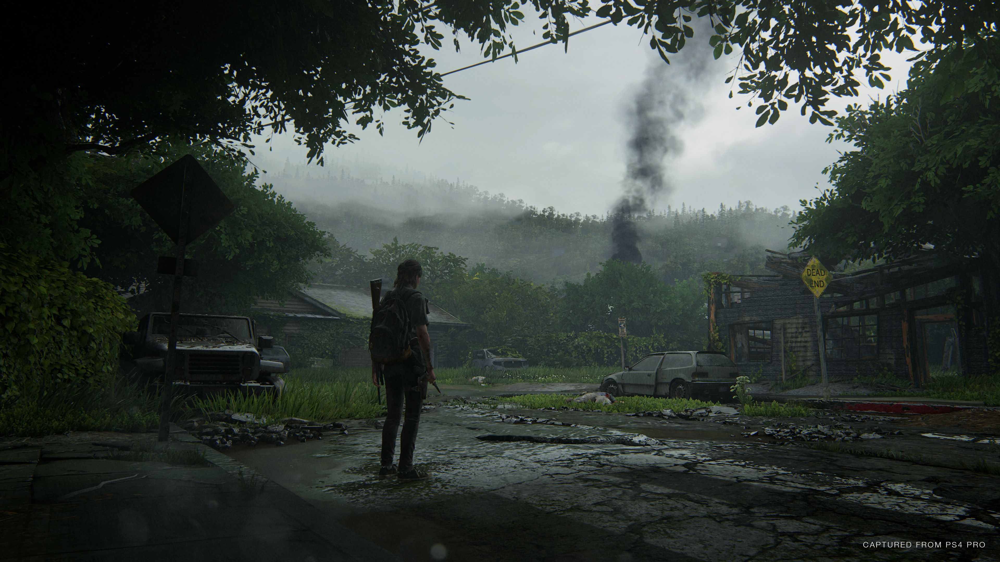

Experience the escalating moral conflicts created by Ellie’s relentless pursuit of vengeance. The cycle of violence left in her wake will challenge your notions of right versus wrong, good versus evil, and hero versus villain.
New and evolved gameplay systems deliver upon the life-or-death stakes of Ellie’s journey through the hostile world. Feel her desperate struggle for survival through improved features such as high-intensity melee combat, fluid movement, and dynamic stealth. A broad variety of weapons, crafting items, skills, and upgrades allows you to personalize Ellie’s capabilities to your play style.
Set out on Ellie’s journey, taking her from the peaceful mountains and forests of Jackson to the lush, overgrown ruins of greater Seattle. Encounter new survivor groups, unfamiliar and treacherous environments, and terrifying evolutions of the infected. Brought to life by the latest iteration of the Naughty Dog engine, the deadly characters and world are more realistic and meticulously detailed than ever before.